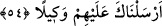

insanlarla muâmeleleri Rasûlullah (s.a.) zamanındaki hallerinden ve muâmelelerinden
farklı olmamıştır.
“Çünkü şeytan insanın apaçık düşmanıdır.” Asla onların salâhını değil, helâkini
ister. Şeytan insanoğlunun babası Âdem (a.s.)’ı cennetten çıkarmak ve nur elbisesini
üzerinden sıyırmakla düşmanlığını açıkça ortaya koşmuştur.
54. Rabbiniz, sizi en iyi bilendir. Dilerse size merhamet eder; dilerse sizi
cezalandırır. Biz, seni onların üstüne bir vekil olarak göndermedik.
Ey müşrikler! “Rabbiniz, sizi en iyi bilendir.” Sizi bizden daha iyi bilir. “Dilerse”
îmâna muvaffak kılarak “size merhamet eder; dilerse” sizi kâfir olarak öldürerek “sizi
cezalandırır.” Bu âyet önceki âyetteki “sözün en güzeli” ifâdesinin tefsiridir. Yâni o
müşriklere bu sözü ve benzerlerini söyleyin. Onlara açıkça cehennem ehli olduklarını
söylemeyin. Çünkü bu onları şerre, kötülüğe tahrik ve teşvik eder. Ancak yine de âkıbeti
Allah’tan başka kimse bilemez. Umulur ki Allah onları îmâna iletir. el-Keşşâf
müellifinin görüşü budur. Beyzâvî ve Ebüssuûd (r.h.) da ona uymuştur. Cumhûr ise
“sözün en güzeli” ile mânâ bakımından güzel konuşmanın, olduğunu söylemişlerdir.
Merhamet ile Mekke kâfirlerinden ve onların eziyetinden kurtarmanın, cezâlandırma ile
Mekke müşriklerinin mü’minler üzerine musallat edilmesinin kasdedildiğini
söylemişlerdir. Bu durumda “Rabbiniz” ifâdesinde hitap mü’minlere olur.
et-Te’vîlât’da şöyle der: Allah hanginizi lütuf ve rahmet sıfatının mazharı kılıp ona
rahmette bulunacağını, şeytanın iğvâ ve saptırmalarından koruyacağını en iyi bilendir.
Hanginizi de kahr sıfatının ve azâbının mazharı kılıp ona şeytanın saptırması ve
aldatmasıyla azap edeceğini en iyi bilendir.
“Biz, seni onların üstüne bir vekil olarak göndermedik.” Ey Muhammed! Onların
işleri sana havâle edilmiş değildir ki onları îmân etmeye zorlayasın. Nitekim Allah
şöyle buyurmuştur: “Bu işte senin yapacağın bir şey yoktur.” (Âl-i İmrân, 3/128) “Biz
ancak seni müjdeleyici ve sakındırıcı olarak gönderdik.” (bk. el-Bakara, 2/119)
Binaenaleyh onları ıslah ve iknaya çalış, ashabına da onları idâre etmelerini,
tahammüllü davranmaları ve hasımlaşmayı terk etmelerini emret. Rasûlullah (a.s.)’ın:
“Allah bana farzları yerine getirmemi emrettiği gibi insanlarla hoş geçinmeyi de
emretti.”[99] buyurduğu rivâyet edilmiştir.
Hâfız şöyle der:
Dünyâ ve âhiretin emniyet ve safâsı şu iki cümlededir:
Dostlara lütuf ve ihsanda bulun, düşmanları da idâre et!